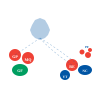
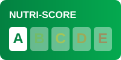
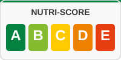

Bibliothèque d'icônes optimisées pour A KI PRI SA YÉ
Représentations des Départements et Régions d'Outre-Mer français

Carte complète des territoires
dom-tom-icon.svg (100x100)
Icône compacte pour UI
dom-tom-simple.svg (64x64)
<img src="public/assets/dom-tom-simple.svg"
alt="Territoires d'Outre-Mer"
width="64" height="64">
Système d'étiquetage nutritionnel officiel français (5 niveaux de A à E)

Très bonne qualité nutritionnelle
nutriscore-a.svg
Bonne qualité nutritionnelle
nutriscore-b.svg
Qualité nutritionnelle moyenne
nutriscore-c.svg
Qualité nutritionnelle faible
nutriscore-d.svg
Qualité nutritionnelle médiocre
nutriscore-e.svg

Référence avec toutes les notes
nutriscore-logo.svg
// JavaScript
function getNutriScoreIcon(score) {
const normalizedScore = score.toUpperCase();
if (!['A', 'B', 'C', 'D', 'E'].includes(normalizedScore)) {
return null;
}
return `/public/assets/nutriscore-${normalizedScore.toLowerCase()}.svg`;
}
// Utilisation
const productScore = 'B';
const iconPath = getNutriScoreIcon(productScore);
document.getElementById('nutriscore').src = iconPath;
Sélectionnez un score nutritionnel :
<title> pour l'accessibilitéalt descriptifaria-label pour les éléments interactifs<img src="public/assets/nutriscore-a.svg" alt="Produit avec Nutri-Score A - Très bonne qualité nutritionnelle" width="200" height="100" >